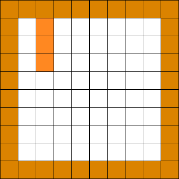
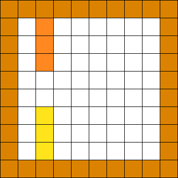
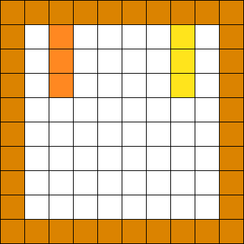
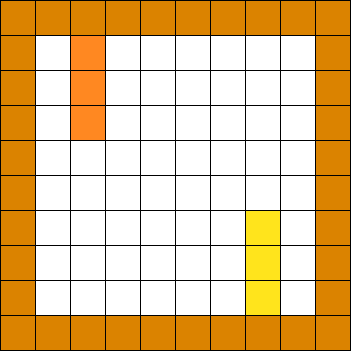
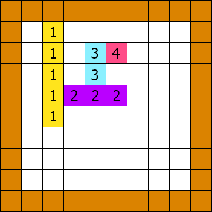
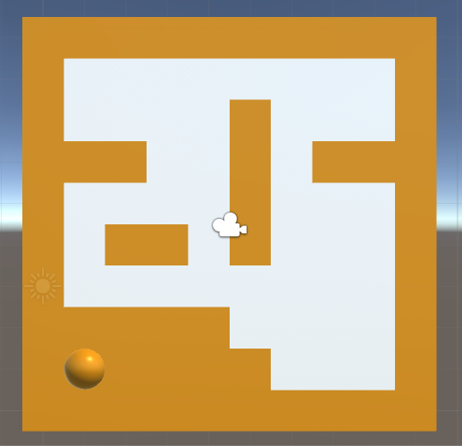

This project involves making my first minigame using two specific ideas. Procedural generation of the map, the movable objects in the game and player objects. The second idea is to validate the map and find the shortest path to complete the game using a BFS search as an AI solving the map. The project made using the game engine Unity made in Denmark and the project is written in c#.
This minigame is a 2D puzzle game. The idea is to connect the two green balls next to each other by use of the arrow keys on the keyboard. When an arrow is pressed the movable objects in the game are moved in the specific direction until they meet an obstacle be it a wall or another object.
The interesting parts become obvious when the blue movable objects are blocking between two green balls. Finding a strategy to use a combination walls and movable obstacles to build your way to victory.
Even though we are building randomly generated walls, I still want to add some symmetry. This symmetry is chosen randomly. When I add walls we either flip these horizontally, vertically or both. First pictures of the pictures below is when one tile a time is painted. The rest are for two tiles a time with different random symmetries:
   The number of walls on the gameboard is chosen randomly along with a direction. The direction is chosen to be orthogonal to the border. As we will not see any effect from a wall overlapping with the borders of the game. I.e. if we are at the left most wall we can only go to the right from a point on the wall.
Each wall I place starts from a random point on the wall. In iteration I build walls going out from the last placed a length is chosen from 0 to wall length - 1. If length is 0 we terminate the iteration. Using this recursive procedure to add walls going further out from the borders of the map.
The direction of the new wall is placed orthogonal from the last one. The result may look like this (the numbers label the iterations):
From the picture we can see that the next wall will always be shorter. So the recursive function will eventually terminate.
All walls generated until now has started from the border, so every tile is always connected to the border. By adding another step in the procedural generation of the map, will create a more diverse map an more interesting levels.
Inner walls are made by choosing a random point in the map and checking if this is free. In addition we check that its 3x3 surrounding tiles are free as well. When a tile is found a random direction is chosen. When building the wall we step forward in the chosen direction while the 3x3 free surrounding condition is true.
To build these floating walls we create a temporary list to put these tiles in, as to not conflict with the 3x3 check. This list of tiles will be added to the map when we return from the function.
When we build the walls of the map it is easily possible for walls to overlap, thereby creating two or more separate areas. We do not want multiple areas to exist as placement of object would conflict with the game mechanics.
The next step in wall generation is to check find the largest area and fill all others with walls. By iterating through the board grid and marking free tiles as part of an area-index as an area ID. Last step is to iterate the board and filling tiles not having the area ID with the highest count.
Example of wall generation seen here.
Now that our walls are generated and the game area has been structured, I start generating objects. We need at least one pair of green player balls and zero or more obstacles (represented as blue balls in the game).
The nicest place, in my point of view, to place the player objects is into corners, in the end of corridors or so. To achieve this I add a heuristic to the choosing of the free tile to place the objects. By adding this weight to every tiles I will increase the attractiveness of these points being chosen.
The weights I chosen is as below. When talk about surrounding tiles I choose only to look at the north, south, west and east position:
Corners and corridors doesn't distinguish themselves in the number of tiles surrounding them. So we have to be aware of separating the case where we are looking at e.g. north and south vs. north and east.
The random numbers in weight can influence the most preferable placements. However the most preferable place can be seen to be end of corridors. These weights are calculated once for each new generated level.
The chosen implementation go through each tile and add the free tiles a number of times to a list, according to the generated weight. When we then choose a free tile we just do a random look-up inside the list and place the player object.
Obstacles (blue balls) are placed in a similar way as I have described above. Below you can see a finished picture of what a level looks like.

Every generated level will have to be tested. I needed to know whether the level could be solved and how easy or hard it is (number of steps). To solve the map I need to consider the input.
The steps in solving this:This is basically a brute force approach. The possible board situation is 4 to the power of the number of moves. Given 10 moves we are looking at 1.048.576 possible number of states. So I needed to limit the maximum states to make this viable for generating maps on the fly.
Limiting the number of moves was not a choice for me but it could be a possibility. Another danger I did not focus on in my project was the issue with dead ending the level. By manual testing I did not see these situation occur at all, but by logic there exists maps with these problems.
Also by doing a depth first search we will not find the minimum path if we do not finish all branches. Some branches might contain situation with loops or where a direction will never change anything.
Updated steps:Because I am using a depth first search (DFS) we cannot enter a state in an earlier depth than seen before. That is why we terminate the branch.
When a branch reaches a game winning state all branches are terminated and the depth is returned. We know that we find the shortest path in the first run of the algorithm as all states with depth k is calculated before going on to k+1.